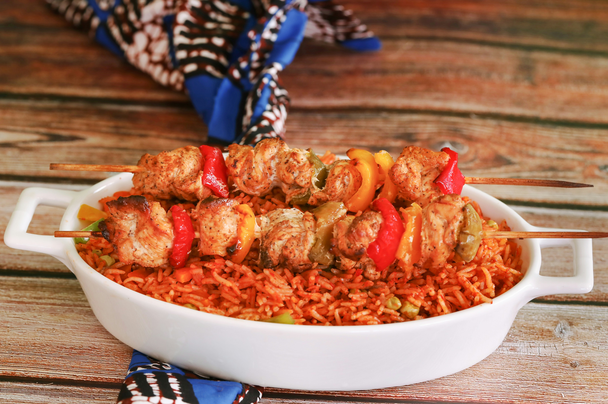

Smoky tomato rice that West Africans love to argue about.
From smoky jollof rice to tangy injera, explore the recipes, spices and stories from a continent with 54 countries and thousands of food traditions.
Explore recipes Our storyFour signature dishes to start your journey. Click the heart to save a recipe for later.

Smoky tomato rice that West Africans love to argue about.

Slow-cooked chicken with preserved lemon, olives and warm spices.

Soft, tangy flatbread that works as the plate and the spoon.

A Durban curry served inside a hollowed-out loaf of bread.
African food changes from region to region. Pick one to explore.
Gluten-free teff, fonio and sorghum are showing up in cafes and supermarkets around the world.
Dishes made with beans, groundnuts and leafy greens are becoming popular as naturally vegan comfort food.
Chefs are trying jollof with smoked peppers, seafood and new spice blends.